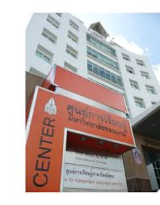

1. หอสมุดกลาง
หอสมุดกลางของมหาวิทยาลัยขอนแก่น เป็นศูนย์รวมทรัพยากรวิชาการทั้งหนังสือ วารสาร และฐานข้อมูลอิเล็กทรอนิกส์ เหมาะสำหรับการค้นคว้า งานวิจัย และการอ่านเพื่อการเรียนรู้



หอสมุดกลางของมหาวิทยาลัยขอนแก่น เป็นศูนย์รวมทรัพยากรวิชาการทั้งหนังสือ วารสาร และฐานข้อมูลอิเล็กทรอนิกส์ เหมาะสำหรับการค้นคว้า งานวิจัย และการอ่านเพื่อการเรียนรู้
ศูนย์ประชุมอเนกประสงค์กาญจนาภิเษก มหาวิทยาลัยขอนแก่น เหมาะสำหรับการจัดประชุมสัมมนา การแสดงนิทรรศการ การจัดกิจกรรมพิเศษต่าง ๆ อาทิ การแสดงบนเวที งานจัดเลี้ยงและพิธีพระราชทานปริญญาบัตร"ศูนย์ประชุมอเนกประสงค์กาญจนาภิเษก" ตั้งอยู่บนเนื้อที่ประมาณ 60 ไร่ ภายใน บริเวณมหาวิทยาลัยขอนแก่นห่างจากบึงสีฐานไปทางทิศตะวันออก อาคารเป็นหอประชุมใหญ่ รูปทรงกูบเกวียนอีสาน (กูบหมายถึง ประทุนหลังช้าง) ลักษณะเป็นอาคาร 2 ชั้น มีพื้นที่ใช้สอย รวมทั้งสิ้น 21,160 ตารางเมดร

สำนักงานปฏิบัติงานบุคลากรและการให้บริการ ประกอบด้วยงานบริการสถานกีฬางานส่งเสริมกิจกรรมกีฬา และหน่วยอำนวยการ โดยบริหารงานภายใต้การกำกับดูแลของฝ่ายกิจการนักศึกษาและนวัตวณิชย์

ศูนย์อาหารที่มีร้านขายของกินมากมายและมีที่จอดรถครบ